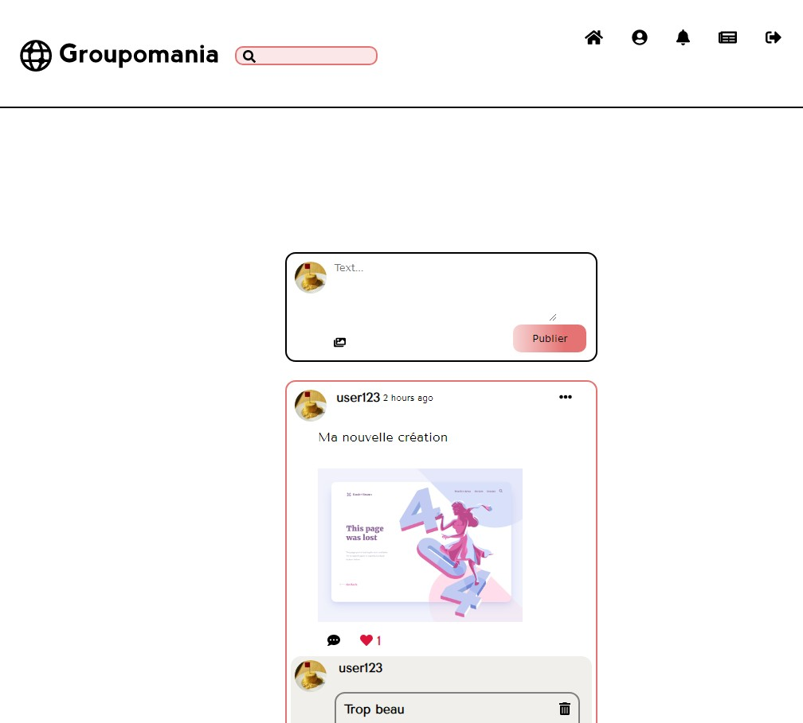

Réservia
2020
Site vitrine
Projet de formation
Réservia est une compagnie (fictive) qui développe des outils de planification de vacances.
L’objectif était de réaliser une première version du site uniquement en HTML et CSS. Cette page static est responsive, le rendu est au pixel près et les éléments qui à terme seront dynamiques sont clairement indiqués par des changements d’état.


Ohmyfood
2020
Application de réservation
Projet de formation
Ohmyfood est une start-up de la foodTech (fictive) qui développe une application pour réserver des menus dans des restaurants gastronomiques.
Le but était de développer un mvp de leur application qui soit mobile-first et qui intègre des animations CSS pour rendre le site plus attrayant.
Chouette Agence
2020
Site vitrine
Projet de formation
La chouette agence est une agence de web design (fictive) en pertte de vitesse.
L’objectif est d’optimiser son site déjà existant afin d’en améliorer les performances et le SEO.


Orinoco
2020
Site e-commerce
Projet de formation
Orinoco est une entreprise de commerce en ligne (fictive).
L’objetif était de développer la partie frontend d’un de leur site e-commerce en le reliant à leur API afin de permettre au utilisateur de pouvoir acheter directement sur le site.
Piquante
2021
Application de notation
Projet de formation
L’entreprise So Pekocko (fictive) souhaitait développer une application pour permettre à leurs clients de noter leurs produits
Dans ce context mon rôle était de développer la partir back-end de cette application via la création d’un serveur node.js et une base de données NoSQL (MongoDB).


Groupomania
2021
Réseau social d'entreprise
Projet de formation
L’entreprise Groupomania (fictive) voulait développer un réseau social propore à l’entreprise afin de favoriser les échanges et la bonne entente.
J’étais chargée de développer à la fois la partie front et back-end couplé à une base de données SQL.